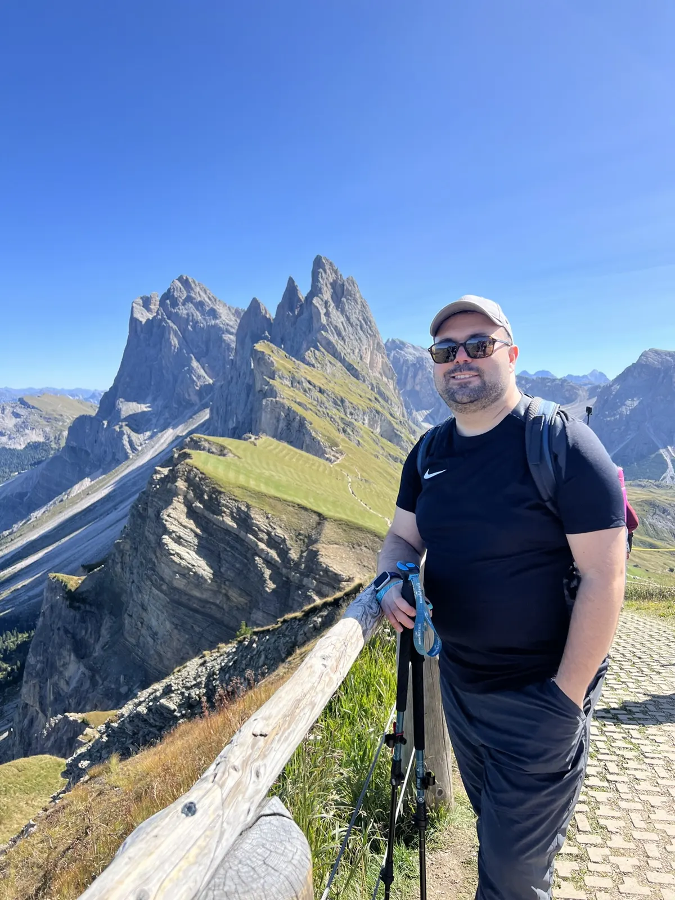
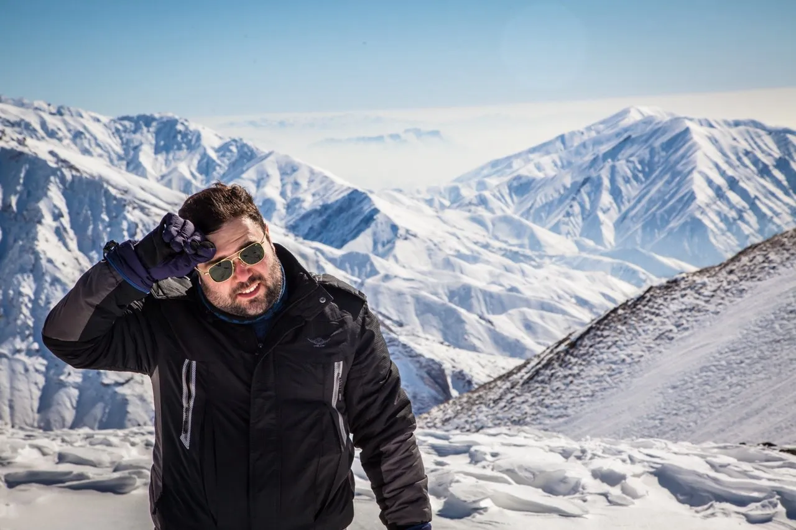
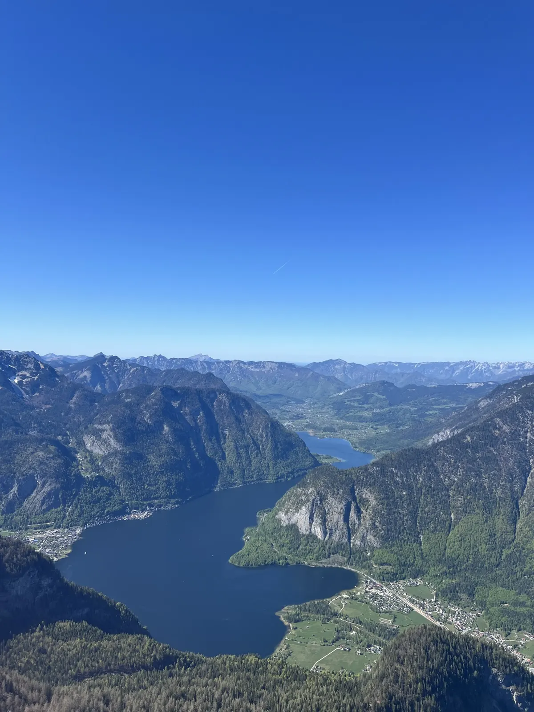
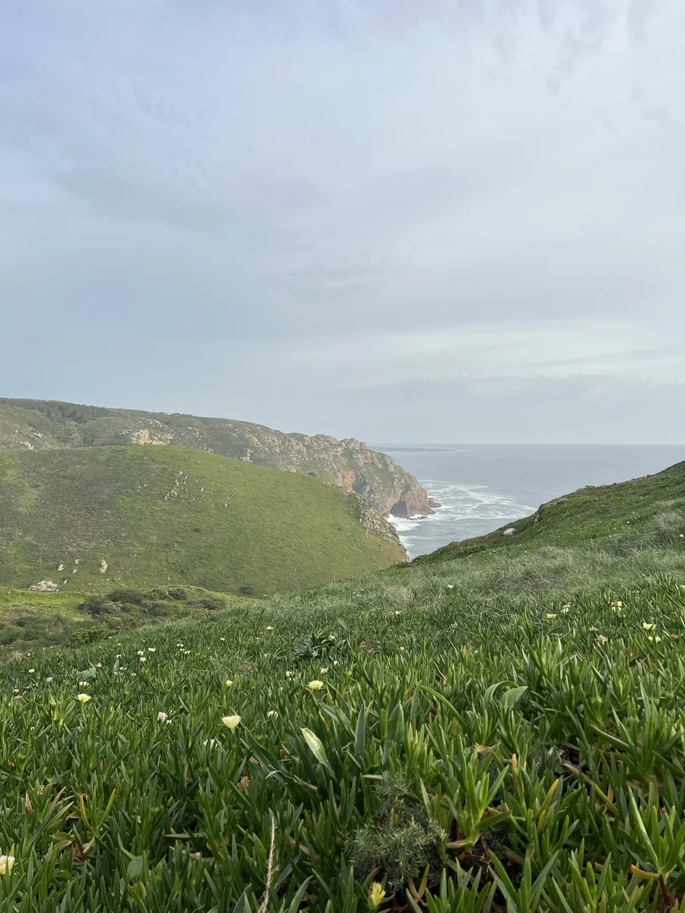

Hiking & biking
I like being out on foot or on a bike, and the Alps are a short trip from Munich.
Life
The resume covers the work. This page is the rest: what I do when I’m not at a keyboard, and what I read, watch and make.

I like being out on foot or on a bike, and the Alps are a short trip from Munich.
I read novels and literature, for the stories and for the language.
I keep learning about new technology and follow startups and their ideas. I co-founded one, so I read them as a founder as well as an engineer.
I watch movies and listen to music, a lot.
I like building and repairing things with my hands, away from the screen.



Experience, expertise and the resume are on the main page.